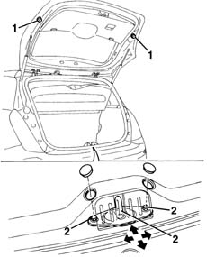
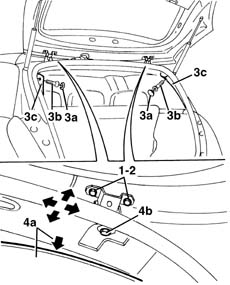

7015A14 tailgate - adjust centring and profile - includes hinge and compartment seal adaptation
- Path
- Procedures > 70 FITTINGS > 7015 TAILGATE/ > 7015A tailgate assembly > 7015A14 tailgate - adjust centring and profile - includes hinge and compartment seal adaptation
- Kind
- repair procedure (removal / refitting; the operation number is the code)
- Applies to
- all engines; all production periods
- Interactive page
- https://sloeber94.github.io/elrnDB-lYpsln/en/#/2429531
Applies to: all engines; all production periods
Lift the tailgate.
1. If necessary, adjust the buffer blocks.
2. If necessary, adjust the position of the lock striker.
7015A10 tailgate - adjust striker and adapt seal if necessary .

Applies to: all engines; all production periods
If the adjustments described above are insufficient, adjust the tailgate hinge position as described below.
1. Loosen the tailgate bolts and adjust the tailgate position, using the slotted holes on the hinges.
2. - Tighten the bolts to the specified torque.
 | Fastening | Component | Ø | Value (daNm) |
|---|---|---|---|---|
2 | Bolt | TAIL GATE HOUSING COMPARTMENT | M6 | 0.9 |
If necessary, adjust the position of the lock striker (see op. 7015A10).
If this adjustment is not sufficient, proceed as follows:
7065C30 interior l/h or r/h grab handle (one) - r+r (rear)
3. Work on both sides of the vehicle, release the covers (3a) and undo the bolts (3b) for the rear pillar trims (3c).
4. Slightly lower the ceiling trim (4a) and slacken the hinge bolts (4b). Adjust the tailgate position.
Tighten the bolts to the specified torque.
| Fastening | Component | Ø | Value (daNm) |
|---|---|---|---|---|
- | Bolt | TAILGATE HINGES | M8 | 3 |
If necessary, renew the sealant between the bodyshell and hinges.
If necessary, adjust the position of the lock striker (see op. 7015A10).

Applies to: all engines; all production periods
Place the roof panel and the rear pillar trims back in position, then fasten them using the bolts and attach the covers.
Topics linked from this page (2)
- 7015A10 tailgate - adjust striker and adapt seal if necessary
- 7065C30 interior l/h or r/h grab handle (one) - r+r